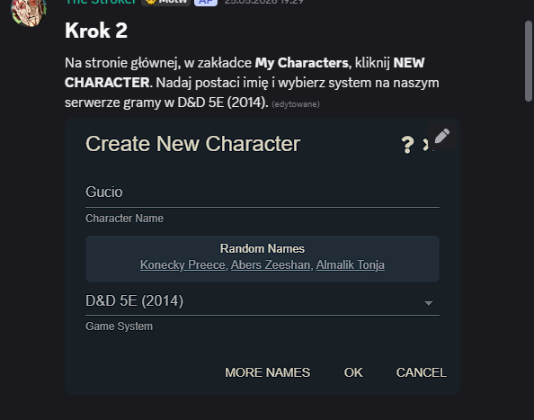
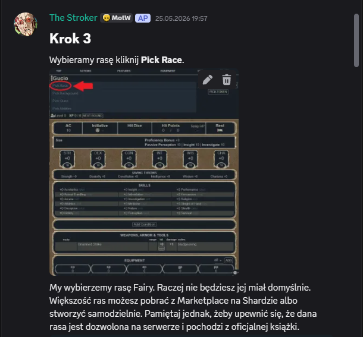
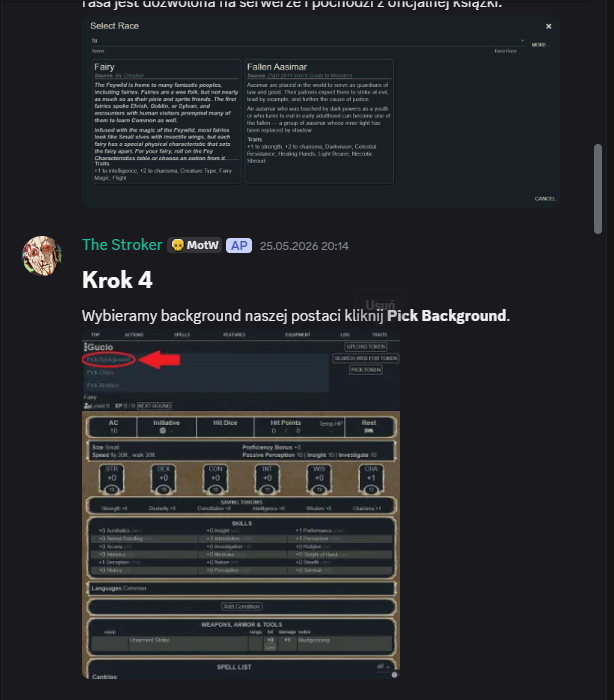
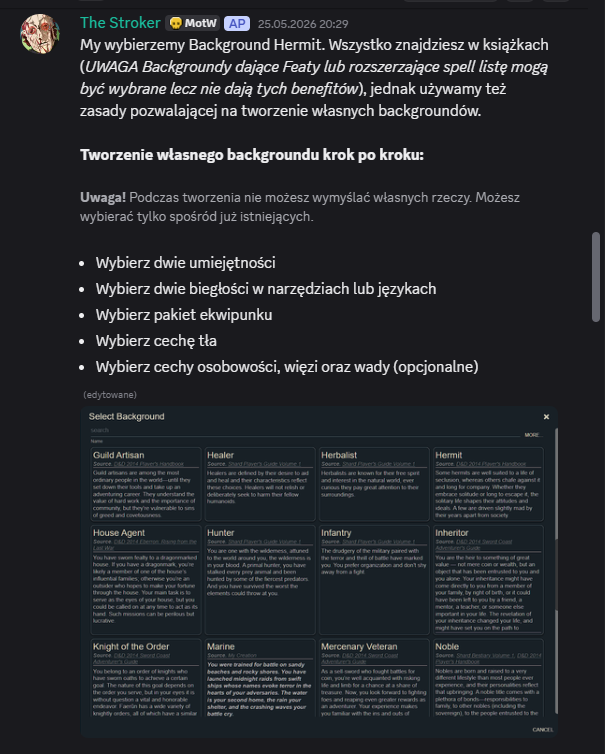
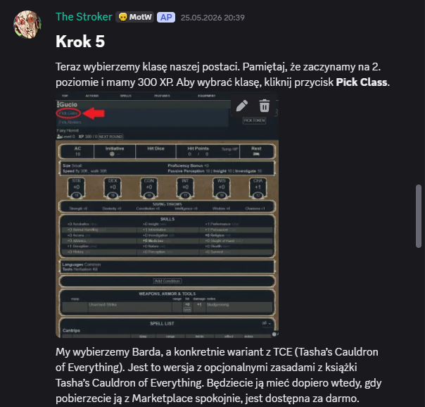
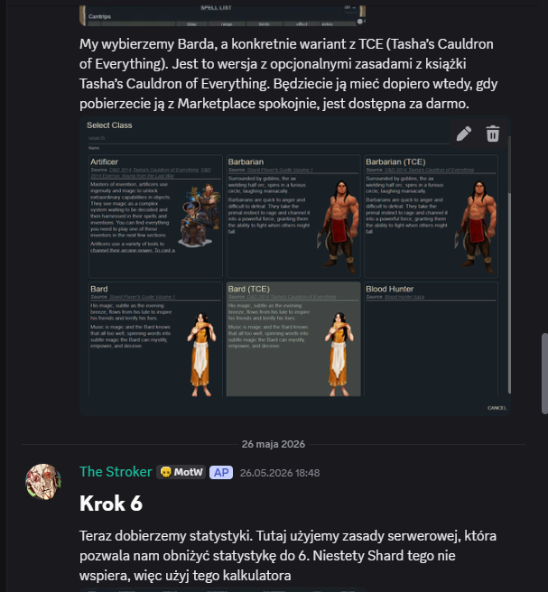
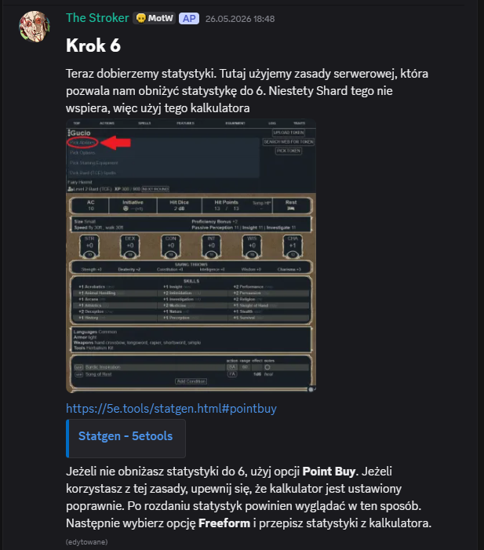
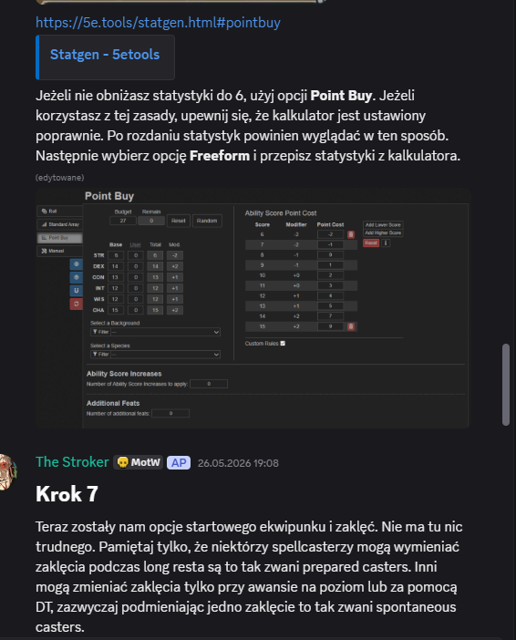
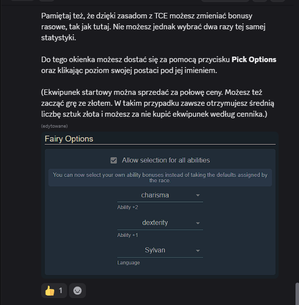
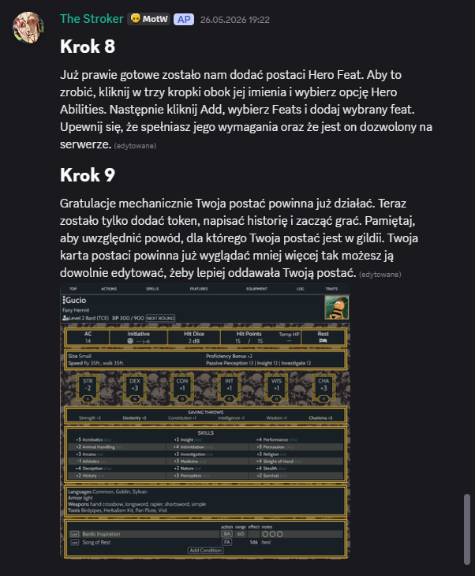

Jak stworzyć postać
Tworzymy postać w Shard Tabletop w systemie D&D 5E (2014). Na serwerze zaczynasz na 2. poziomie z 300 XP.
1. Załóż konto w Shard Tabletop
Otwórz Shard Tabletop OpenDnD i załóż konto. Na stronie znajdziesz też ofertę trzech miesięcy subskrypcji Adventurer.
2. Utwórz nową postać
W zakładce My Characters kliknij New Character. Wpisz imię postaci, wybierz system D&D 5E (2014) i kliknij OK.


3. Wybierz rasę
Kliknij Pick Race. W przykładzie wybieramy Fairy. Jeśli nie widzisz swojej rasy, poszukaj jej w Shard Marketplace lub dodaj ją ręcznie według zasad z podręcznika. Upewnij się, że rasa jest dozwolona na serwerze. Dodatkowe opcje znajdziesz w katalogu ras.


4. Wybierz tło postaci
Kliknij Pick Background. Przykładowe tło to Hermit. Możesz wybrać tło przyznające feat lub rozszerzające listę zaklęć, ale na serwerze nie otrzymujesz tych dwóch rodzajów korzyści z tła.
Możesz też stworzyć własne tło, korzystając z istniejących opcji:
- Wybierz biegłość w dwóch umiejętnościach.
- Wybierz dwie opcje spośród biegłości w narzędziach i języków.
- Wybierz pakiet wyposażenia i cechę tła.
- Opcjonalnie wybierz cechy osobowości, więzi i wady.




5. Wybierz klasę i ustaw poziom
Kliknij Pick Class. W przykładzie wybieramy Bard (TCE), wariant z opcjonalnymi zasadami z Tasha’s Cauldron of Everything. Jeśli wariantu nie ma na liście, sprawdź Shard Marketplace. Ustaw postać na 2. poziomie z 300 XP. Klasy i podklasy w wiki




6. Rozdaj statystyki
Kliknij Pick Abilities. Jeśli nie obniżasz żadnej statystyki poniżej 8, możesz użyć wbudowanego Point Buy. Zasada serwera pozwala zejść do 6. Wtedy użyj kalkulatora Point Buy w 5etools 2014, włącz Custom Rules i ustaw budżet 27 punktów. Wyniki przed premiami rasowymi przepisz w Shardzie w trybie Freeform.
Koszt według kolejnych wartości od 6 do 15 wynosi: −2, −1, 0, 1, 2, 3, 4, 5, 7, 9. Przykładowy zestaw wykorzystujący 27 punktów to 6, 14, 13, 12, 12, 15.




7. Uzupełnij wyposażenie, zaklęcia i opcje rasowe
Wybierz wyposażenie startowe i zaklęcia zgodnie z zasadami swojej klasy. Klasy przygotowujące zaklęcia zwykle mogą zmienić przygotowaną listę po długim odpoczynku. Klasy uczące się zaklęć zmieniają je zgodnie z zasadami awansu lub za pomocą DT na serwerze.
W Pick Options lub po kliknięciu poziomu pod imieniem postaci możesz zmienić przypisanie premii rasowych zgodnie z TCE. Premii nie możesz przypisać dwukrotnie do tej samej cechy.
Wyposażenie startowe możesz sprzedać za połowę ceny. Jeśli wybierasz start ze złotem, otrzymujesz średnią kwotę przewidzianą dla klasy i kupujesz wyposażenie według cennika.


8. Dodaj Hero Feat
Kliknij trzy kropki obok imienia postaci i wybierz Hero Abilities → Add → Feats. Dodaj wybrany feat. Sprawdź, czy spełniasz jego wymagania i czy jest dozwolony na serwerze.
9. Dodaj token i historię postaci
Dodaj token i napisz krótko, kim jest twoja postać oraz dlaczego dołączyła do gildii Dzieci Gwiazd. Możesz dostosować wygląd karty do postaci.


10. Zarejestruj postać na Discordzie
- Utwórz post na kanale #bohaterowie według zamieszczonego tam wzoru.
- Po opublikowaniu posta zarejestruj postać odpowiednią komendą bota.
- Użyj Quick Info pod postem, aby MG miał dane potrzebne do przyznawania XP.